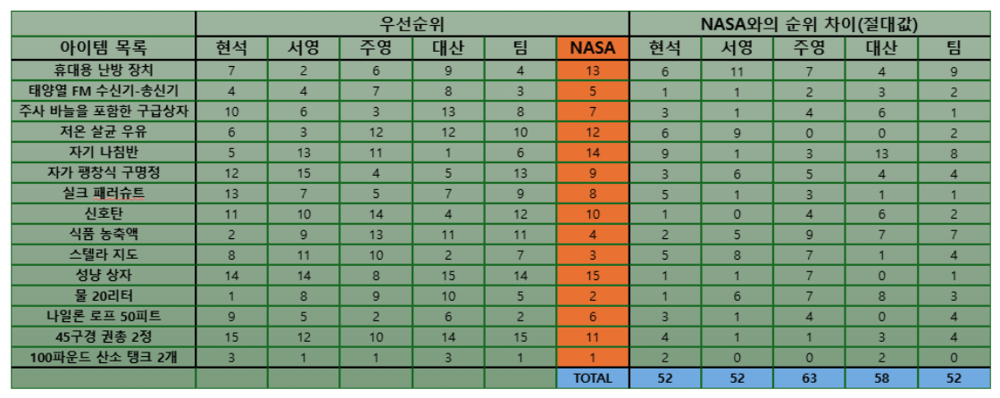

01 — Today's Summary
오늘의 작업 요약
오늘은 프로젝트 킥오프 세션으로 팀 구성, 문제 정의, 요구사항 정의까지 기획 전반을 완료하였습니다. 특히 아이디어 회의 중 발견된 RAG 기술 이해도 부족을 해결하기 위해 심화 학습을 병행하였습니다.
02 — Process Details
진행 내용
2.1 아이스 브레이킹 (NASA 게임)

팀원 간 협업 역학을 확인하기 위해 '달 표면 생존 시나리오'를 진행했습니다.
- 개인 순위 도출 후 팀 토론을 통한 단일 순위표 합의
- NASA 공식 답안과 비교하여 팀의 의사결정 방식 및 리더십 확인
2.2 팀 구성 및 Ground Rules
| 항목 | 내용 |
|---|---|
| 팀명 | 에듀 프렌드 (Edu-Friend) |
| 팀원 | 최현석, 최대산, 강주영, 정서영 |
2.3 기획 문서 작성 완료
프로젝트 기획
Concept Plan
다문화 가정의 한국어 장벽을 해결하기 위한
이중언어 대화형 AI 튜터 선정
요구사항 정의
SRS
10일 MVP 목표: 수학 1개 단원 범위 내 한-베 이중언어 질의응답
기능 구현
03 — Tech Deep Dive
RAG(Retrieval-Augmented Generation) 학습
정확도 높은 답변 생성을 위해 LLM에 외부 데이터를 제공하는 RAG 기술의 발전 단계를 분석하였습니다.
L1
Naive RAG
기본형
질문 벡터화 → 유사 문서 검색 → 답변 생성. MVP 단계 적용 예정.
L2
Advanced RAG
고급형
재순위화(Re-ranking), 쿼리 확장 등 사전/사후 처리를 통한 품질
향상.
L3
Modular RAG
모듈형
프로세스를 독립적인 모듈로 분리하여 유연한 확장성 확보.
🔗 본 프로젝트 적용 방향:
초기 MVP는 Naive RAG로 구현하되, 오답 재설명 시 정확도를 높이기 위해 Advanced RAG의 쿼리 확장 기법 도입을 고려함.
초기 MVP는 Naive RAG로 구현하되, 오답 재설명 시 정확도를 높이기 위해 Advanced RAG의 쿼리 확장 기법 도입을 고려함.
04 — Retrospective
오늘의 회고
Check
성장 포인트
단순히 아이디어를 나열하는 것에서 나아가,
'어떤 기술을 왜 사용해야 하는지' RAG의 발전
단계를 통해 구체화할 수 있었습니다.
내일의 작업 계획 (Next Steps)
- 유사 서비스 벤치마킹 및 초등 수학 MVP 대상 단원 확정
- 핵심 기능 상세 정의 및 화면 흐름(Flow) 설계
- 기술 스택 및 데이터 구성 방향 최종 논의